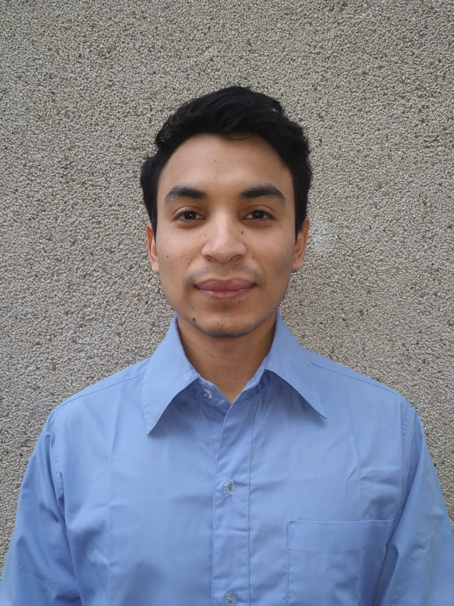

Artículo 6 Vivir y estudiar en Taiwán: La experiencia de un guatemalteco

Autor: Braian Staimer Florián Montenegro
Correo electrónico: braianflorian@gmail.com
Fecha: 20 de octubre de 2019
Resumen
El presente artículo trata sobre mi experiencia como estudiante de intercambio en la Universidad Nacional Chiao Tung, Taiwán; describo la importancia que tiene este tipo de programas para el crecimiento personal y tecnológico, y cómo impactan dentro de la sociedad; por tanto, se concluye que dichos estudios de posgrado son una realidad y necesidad.
Abstract
This article is about my experience as an exchange student at National Chiao Tung University, Taiwan; I describe the importance of such programs for personal and technological growth, and how this impacts society. Concluding that it is a reality that postgraduate studies are necessary.
Palabras Clave:
Estudiante, intercambio, programas becarios, extranjero.
6.1 Introducción
La Universidad de San Carlos de Guatemala, siendo la rectora de la educación superior de Guatemala, así como otras instituciones, ofrece la oportunidad al estudiante de continuar sus estudios a nivel superior dentro del territorio nacional o en el extranjero. Esto permite que el conocimiento adquirido y la tecnología desarrollada en estos programas de educación puedan ser aplicados en un futuro para resolver problemas que surjan en nuestra comunidad.
6.2 Artículo
“Me doy cuenta de que subirme en el avión hacia Taiwán ha sido una de las mejores decisiones de mi vida”.
Desde que era niño, mi familia me ha enseñado principios y valores importantes que me han ayudado como estudiante y como persona, a trabajar intensamente y dar lo mejor de mí para lograr mis objetivos. Durante toda mi vida he disfrutado participar en diferentes actividades, desde formar parte de un equipo de fútbol, hasta ser voluntario en diferentes programas como “Remodelación de escuelas en el interior del país”; una organización no gubernamental que ayuda a las personas que viven en la pobreza extrema, para que puedan desarrollar sus centros de estudios.
Gracias a estas actividades he adquirido mucha experiencia, nuevos amigos, compartir con líderes y desarrollar diferentes habilidades sociales; así también la posibilidad de estudiar en la mejor universidad de mi país, Universidad de San Carlos de Guatemala, y la oportunidad de viajar a Taiwán, conocer su cultura y vivir la experiencia de realizar un proyecto de investigación en la prestigiosa Universidad Nacional Chiao Tung.
Desde muy joven me interesaron los dispositivos electrónicos, las computadoras, cómo funcionan, cómo están diseñados y construidos, y cómo pueden ser útiles para hacer que nuestras vidas sean más cómodas y convenientes. Para encontrar la carrera que se relaciona con estas materias, investigué un poco y elegí Ingeniería en Ciencias y Sistemas como mi especialidad en la Facultad de Ingeniería. Ahora, después de casi cinco meses de investigar como estudiante de intercambio en el área de Energía, me doy cuenta de que subirme en el avión hacia Taiwán ha sido una de las mejores decisiones de mi vida, y veo claramente qué es lo que quiero seguir aprendiendo y basar mi vida profesional.
El área en la que estoy centrando mi investigación es en cómo controlar el enfriamiento en un entorno de centro de datos utilizando algoritmos de aprendizaje automático, la rama de la ciencias de la computación que, combinando los temas de termodinámica, dinámica de fluidos y transferencia de calor, aborda uno de los mayores desafíos que la humanidad haya enfrentado: la eficiencia energética, el cumplimiento ambiental y aumentar la vida útil de los circuitos integrados que se ven afectados por altas temperaturas en los centros de datos. Cada vez que presionamos un interruptor de luz, manejamos un vehículo, marcamos un número de teléfono, usamos una computadora, o incluso cuando comemos, pensamos en toda la energía que se usó para producir una simple barra de pan, desde el momento que el trigo fue extraído de los campos, transportado y horneado, hasta el momento en que llega a sus manos.
“Después de vivir la experiencia enriquecedora de la Universidad Nacional Chiao Tung durante más de cuatro meses, veo claramente que es el lugar que mejor se adapta a mis necesidades”.
Mi principal objetivo es convertirme en investigador profesional, y después de vivir la experiencia enriquecedora de la Universidad Nacional Chiao Tung durante más de cuatro meses, veo claramente que es el lugar que mejor se adapta a mis necesidades. Sé con certeza que NCTU es donde alcanzaré mis objetivos profesionales, adquiriendo un gran conocimiento de sus profesores y programas docentes de alta calidad; el ranking mundialmente reconocido en los campos de la tecnología, y los recursos de los laboratorios nacionales de clase mundial, el Silicon Valley de Taiwán, el Parque Científico Hsinchu (HSP), reconocido mundialmente, que proporciona instalaciones de investigación a los estudiantes e incluso brinda oportunidades para colaborar con los mejores empresas de alta tecnología y participar en experimentos tecnológicos líderes. Además, tuve la oportunidad de aprender bajo la supervisión de un pionero en Ingeniería Mecánica, con más de doscientos trabajos publicados y más de cuatro mil citas en su área, el profesor Chi-Chuan Wang, con quien tuve la oportunidad aplicar los conocimientos que aprendí en la Universidad de San Carlos de Guatemala, y más importante aún, poder seguir aprendiendo nuevas tecnologías y cómo estas afectan directamente en la industria.
Otro de mis planes es aplicar en mi país el conocimiento aprendido en NCTU, después de completar mi proyecto de investigación. Estoy contento por la oportunidad que se me dio de aportar mi grano de arena para fortalecer el convenio existente entre NCTU y USAC en relación con este tipo de programas de becarios. Espero introducir nuevas tecnologías en el campo de ciencias de la computación, y ser parte de la nueva generación de estudiantes que contribuirá a que nuestra nación se consolide como un país en crecimiento a través del desarrollo de nuevas tecnologías.
6.3 Conclusiones
Es necesario vivir la experiencia de salir de nuestra zona de confort para descubrir realmente los problemas que vive nuestra sociedad y su posible solución.
Uno de los retos más difíciles es atreverse a hacerlo, sin embargo, una vez se logra completar este paso, la experiencia será gratificante en todo sentido.
Cada vez más universidades ofrecen la oportunidad de participar en este tipo de programas de becarios, por lo cual queda claro que cada vez es más necesario continuar elevando nuestro nivel académico.
6.4 Recomendaciones
Informarse sobre las oportunidades que ofrecen la Universidad y otras instituciones, ya que cada año son muchas las becas que no se aprovechan.
Aprender, aprender y seguir aprendiendo, ya que solo nosotros podemos resolver los problemas de nuestra sociedad.
Dar lo mejor de nosotros para que este tipo de programas pueda continuar, con el afán de que nuestra participación sirva de estímulo para que otros compañeros experimenten estas nuevas vivencias de aprendizaje.
6.5 Referencias
[1] Universidad de Granada. Universidad de Granada: Cómo elaborar un artículo científico. Recuperado de: https://bit.ly/30OJ9XF. [Último acceso: noviembre de 2019].
[2] Universidad de San Carlos. Ingeniería, USAC: Revista de la escuela de estudios de postgrado. Recuperado de: https://bit.ly/2PMvOcb. [Último acceso: noviembre de 2019].